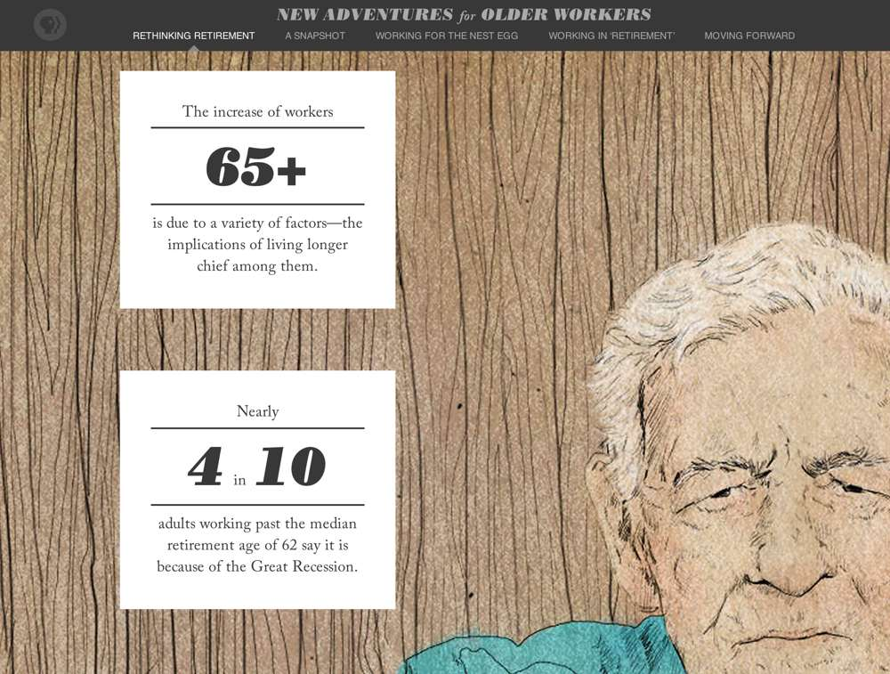
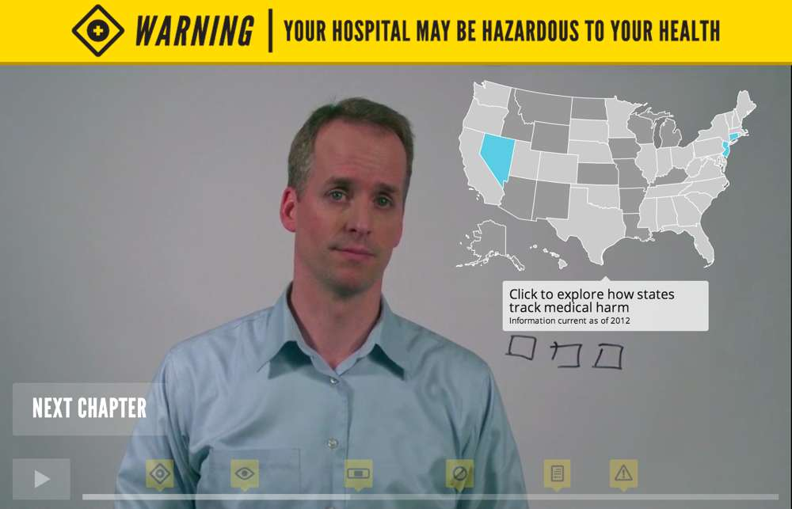

New Adventures for Older Workers
Ocupop, 2013
A PBS NewsHour presentation on the changing landscape of retirement and senior-aged workers, featuring videos, animated infographics and interactive polls. I built the animations and interactive elements, plus some backend infrastructure.
View source on GitHub

Your Hospital May Be Hazardous to Your Health
Ocupop, 2013
Read my article about the making of this project at Mozilla OpenNews.
An interactive video on the widespread danger of in-hospital injury built at the Tribeca Hacks Storytelling Innovation Lab with Frontline and ProPublica. I built the interactive elements.
View source on GitHub
- jQuery
- CSS Animation
- SVG Animation
- Popcorn.js
Dr. Jeff Gardere: America's Psychologist
Rozilo, 2012
Marketing site for psychologist and television personality Dr. Jeff Gardere. Includes a custom app for scheduling online and in-person sessions with Dr. Jeff. I wrote all the code and adapted the design for mobile devices.
- Ruby on Rails
- WordPress
- Responsive Design
- jQuery